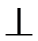
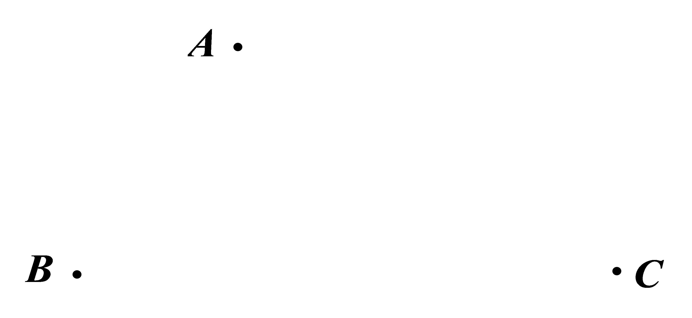

2019年北京市中考数学试题 · 数学解答题 第22题22．在平面内，给定不在同一直线上的点A，B，C，如图所示．点O到点A，B，C的距离均等于a（a为常数），到点O的距离等于a的所有点组成图形G，的平分线交图形G于点D，连接AD，CD．（1）求证：AD=CD；（2）过点D作DEBA，垂足为E，作DFBC，垂足为F，延长DF交图形G于点M，连接CM．若AD=CM，求直线DE与图形G的公共点个数．